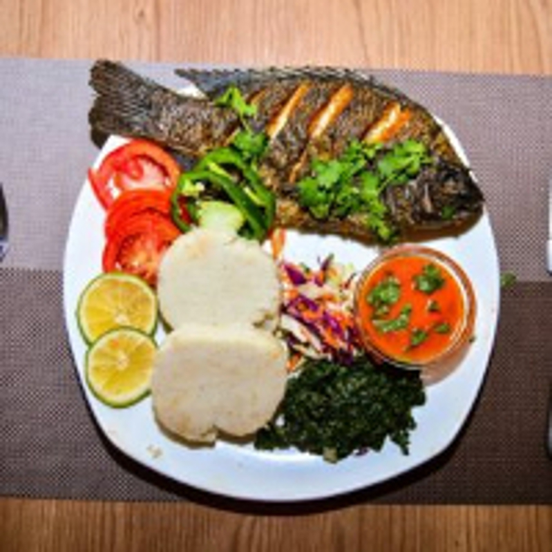
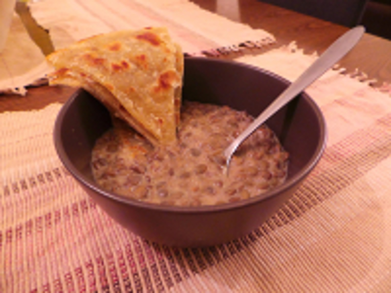
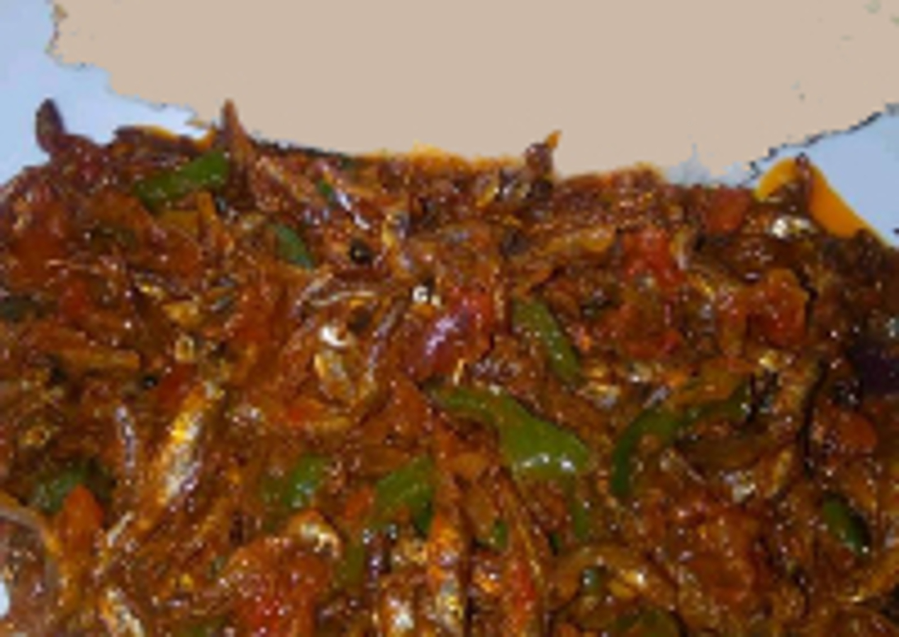
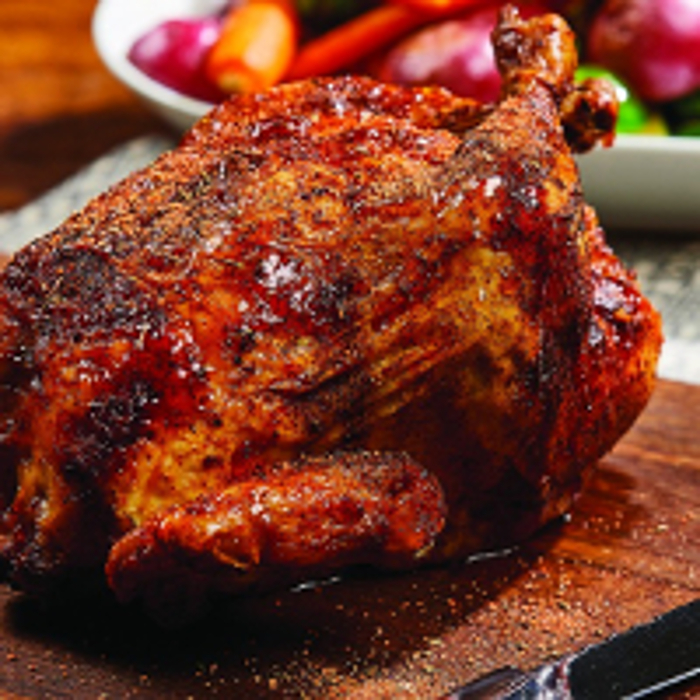
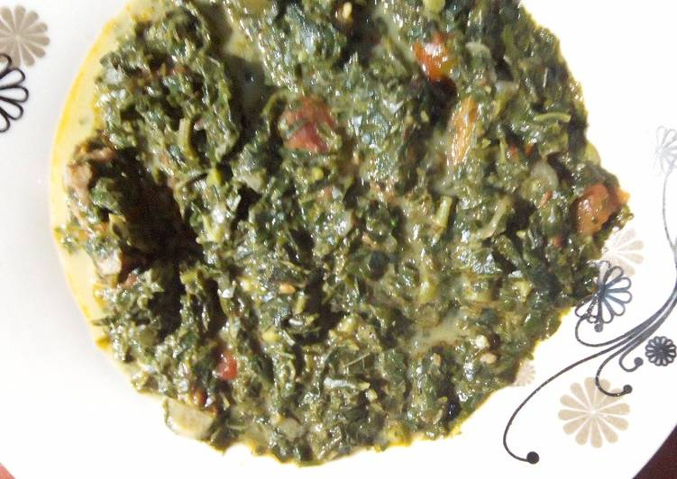

Welcome to Mama Otis Dishes
1
Mexicano Fish & Ugali

Spicy fish stew and Ugali with a blend of Mexican cheeses.
2
Legendary Phulka with Pojo

Layers of light tasty phulka with hot coconut bean stew(swahili style).
3
Fried Rastrineobola Argetea with Wimbi Ugali and Guacamole

This is a vegan delicacy packed with strength for the whole day, stir fried served with guacamole salad and Wimbi Ugali.
4
Rotisserie Kienyeji Chicken

Tender Kienyeji chicken(western kenya quality) slow roasted on the rotisserie, flavored with spicy and fragrant jerk sauce and served with fried plantains and sliced mango. Warning, very spicy!
5
Vegeterians Delight

Traditional mbogas served with the starch of the day.6
Chapatian Delight

Swahili chapati either oily-soft or lean-crunchy served with the stew of the day.